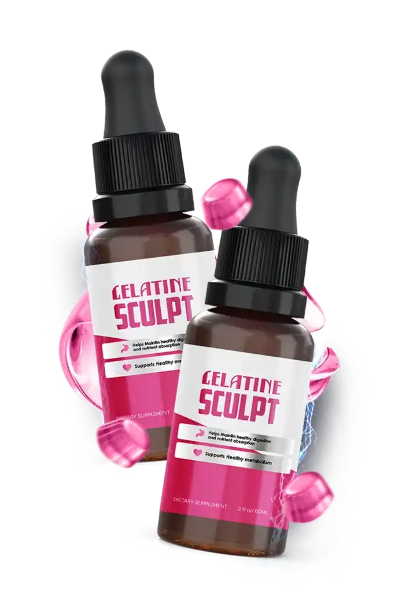

2 BOTTLES
2 Bottles
Listed as a 60-day supply

$79 / bottle
- A simple first order
- Small shipping fee at checkout
- No guides listed
- 60-day refund promise
$158 + small shipping fee
Check Price: 2 BottlesGelatine Sculpt is a once-a-day liquid for adults who want a simple morning habit to support healthy metabolism, healthy digestion and nutrient absorption alongside balanced eating and regular movement. One dropper, no pills and no mixing required. This site shows you the ingredients, the safety notes and the prices plainly, and says when a doctor should be asked first.
| Format | Liquid drops, dropper bottle |
|---|---|
| Seller's directions | One dropper each morning |
| Packs | 2, 4 or 8 bottles, $79 to $37 each |
| Free shipping | On 4 and 8 bottles |
| Made for | Adults 18 and over* |
| Not a | Treatment for any disease |
Secure payment · 60-day refund promise

An illustration of the metabolism theme, not a measurement. Follow the directions on your own bottle.
A short ingredient list, plain cautions, free shipping on larger packs and 60 days to decide make the choice easier. Start with the ingredients or safety and interactions.
As stated by the seller.
As stated by the seller.
Registration is not approval.
Listed openly, with cautions.
Read the ingredients and the safety notes before you decide.
Gelatine Sculpt is a dietary supplement sold as liquid drops. The bottle says it helps maintain healthy digestion and nutrient absorption and supports healthy metabolism, and it is taken as one dropper each morning.* See what Gelatine Sculpt is.
The four named ingredients are green tea extract, gelatine, turmeric and berberine, with amounts on the Supplement Facts panel. Gelatine is animal-derived, so the formula is not plant-based, and berberine calls for particular care. See the ingredients.
It is not a medicine, and it makes no promise about weight or about any condition.
See Gelatine SculptGelatine Sculpt comes in packs of two, four and eight bottles at $79, $55 and $37 each. The seller lists them as 60, 120 and 180 day supplies, ships the 4 and 8 bottle packs free and backs every order with a 60-day refund promise. See the pricing page, the refund promise and safety and interactions.
Listed as a 60-day supply
$158 + small shipping fee
Check Price: 2 BottlesListed as a 180-day supply

$294 total
Check Price: 8 BottlesListed as a 120-day supply

$220 total
Check Price: 4 BottlesSavings are per bottle against the $79 two-bottle price. Confirm the live total, shipping and the refund process at checkout before you pay.
Price per bottle, drawn to scale.
The seller covers every order for 60 days. You email support with your order number, the seller says the money goes back to your original payment method within 3 to 5 business days and that you do not have to send the bottle back, even if it is empty. Read the exact terms at checkout. See the refund process.
Order With the 60-Day Refund PromiseSix covers were supplied. They are general wellness reading, none is a medical treatment, and the seller's own titles for the guides differ from these covers, so confirm the exact list at checkout. See pricing.


From $79 a bottle on two to $37 on eight, each with a 60-day refund promise. See pricing.
Weight and metabolism depend on what and how you eat, how you move, how you sleep, your age, your medicines and your medical care, and no liquid replaces those. Gelatine Sculpt is offered as one small morning ritual beside them for people who prefer drops to capsules.* See healthy weight daily habits.
The honest limits are worth stating. The four ingredients are known but none is a proven weight loss ingredient, the seller's own marketing is stronger than the bottle's claims, and this site promises no number on the scale.* See the benefits and how to spot weight loss supplement hype.
Cautions matter too. Berberine in particular can interact with many medicines. See berberine and medicine interactions.
Balanced, protein-rich meals.
A daily walk you enjoy.
A regular bedtime.
Keep your doctor informed.
Tap an ingredient for what it is and the main caution.*
In short: A familiar leaf with catechins and some caffeine.*
Green tea (Camellia sinensis) leaf extract is the most researched plant in the Gelatine Sculpt line-up, rich in catechins and usually carrying a little caffeine. The seller names it first.
In short: A protein made from animal collagen.*
Gelatine is a protein produced from animal collagen, usually from skin and bones. It is not a plant, so the seller's description of the product as plant-based does not fit this ingredient.
In short: The golden root, usually standardised for curcumin.*
Turmeric (Curcuma longa) is the bright yellow root of curries and traditional medicine, and its main compound is curcumin. It is named third in the formula.
In short: A plant alkaloid studied for blood sugar.*
Berberine is a yellow alkaloid found in several plants and has been studied for its effect on blood sugar. It is the most pharmacologically active name on the list and the one that deserves the most care.
The seller names green tea extract, gelatine, turmeric and berberine. Amounts are on the Supplement Facts panel, and none of these four is a proven weight loss ingredient, so compare it with the ingredients page and read safety and interactions.
Check the panel on your own bottle.
Four named ingredients and 60 days to decide. See pricing and the refund promise.
Please read this before you order.
Healthy adults 18 and over who have read the label, are comfortable with an animal-derived ingredient and have no medicine that conflicts.*
Anyone on diabetes medicine, blood thinners or other prescriptions, and anyone with liver, gallbladder or heart concerns.
Anyone under 18, pregnant or nursing, or anyone who avoids animal products.
The seller describes one dropper under the tongue or in a drink each morning. Follow the directions printed on your bottle. See how Gelatine Sculpt works and how to use it.
Amounts and cautions.
Pharmacist first.
Morning, under the tongue or in a drink.
Results vary.*
The seller describes one dropper in the morning, under the tongue or in a drink. Choose a cue you already have. This planner is a demo and saves nothing. See the morning routine.
I will take my Gelatine Sculpt as my label directs before breakfast.
Tap a day once you have taken it.
Give any supplement a fair, consistent trial alongside your habits, and see the 60-day refund promise.
Your drop with water in the morning, then these healthy weight daily habits for the rest.
Your drop, a glass of water and a balanced breakfast.
A protein-rich lunch and a ten-minute walk.
A planned snack and a stretch.
A lighter dinner and a regular bedtime.
The bottle's own statements, not verified medical outcomes. Results vary.*
The bottle's central statement.
Helps maintain healthy digestion.
Helps maintain nutrient absorption.
One dropper in the morning.
Listed openly.
Medicine notes up front.
On 4 and 8 bottles.
A 60-day refund promise.
Named reviews with cities, pounds lost and before-and-after photos cannot be verified from here, so this site shows plain themes and no star ratings.
Gelatine Sculpt comes in packs of two, four and eight bottles at $79, $55 and $37 each. The seller lists them as 60, 120 and 180 day supplies, ships the 4 and 8 bottle packs free and backs every order with a 60-day refund promise. See the pricing page, the refund promise and safety and interactions.
Listed as a 60-day supply
$158 + small shipping fee
Check Price: 2 BottlesListed as a 180-day supply
$294 total
Check Price: 8 BottlesListed as a 120-day supply
$220 total
Check Price: 4 BottlesSavings are per bottle against the $79 two-bottle price. Confirm the live total, shipping and the refund process at checkout before you pay.
Price per bottle, drawn to scale.
The seller covers every order for 60 days. You email support with your order number, the seller says the money goes back to your original payment method within 3 to 5 business days and that you do not have to send the bottle back, even if it is empty. Read the exact terms at checkout. See the refund process.
Order With the 60-Day Refund PromiseShort reads to go with your decision. Back to the ingredients or the prices.
The protein behind the name.
Catechins, caffeine and modest results.
What tradition and trials say.
Gelatine Sculpt is a liquid dietary supplement taken with a dropper each morning. The bottle says it helps maintain healthy digestion and nutrient absorption and supports healthy metabolism.* It is not a medicine and not a treatment for any condition.
The seller names four: green tea extract, gelatine, turmeric and berberine. See the ingredients. The reference says each is listed with its amount, so read the Supplement Facts panel on your bottle.
Not entirely. Gelatine comes from animal collagen, so any claim that the whole formula is plant-based is not accurate. If you avoid animal products, ask the seller about the source first.
The seller describes one dropper full each morning, placed under the tongue or stirred into a drink. Follow the directions on your bottle. See how Gelatine Sculpt works and how to use it.
The seller lists 2, 3 and 8 style packs as 60, 120 and 180 day supplies, which works out to about 30 days a bottle for the first two. Eight bottles at 30 days each would be 240 days, so check the servings per container on your own label.
No result is promised. The bottle itself claims only digestion, nutrient absorption and metabolism support, and any weight change depends mainly on eating, movement, sleep and medical care.
Anyone pregnant or nursing, anyone under 18, anyone who takes diabetes medicine, blood thinners or other prescriptions, and anyone with liver, gallbladder or heart concerns. See safety and interactions.
Not without asking. Berberine and green tea may lower blood sugar further, so talk to your doctor and pharmacist first, and never change prescribed treatment because of a supplement.
Two bottles are $79 each ($158 plus a small shipping fee), four are $55 each ($220, free shipping) and eight are $37 each ($294, free shipping). See pricing and confirm every total at checkout.
The seller lists free digital guides with the 4 and 8 bottle packs. Six covers were supplied and are shown here, and the contents should be confirmed at checkout.
| Front of bottle | Helps Maintain* Healthy Digestion and Nutrient Absorption · Supports Healthy Metabolism* |
| Named ingredients | Green tea extract, gelatine, turmeric, berberine |
| Amounts, servings, directions | On the Supplement Facts panel of your bottle |
| Origin (seller's statement) | Made in the USA in an FDA-registered, GMP-certified facility |
Built from the supplied bottle photos and the seller's page, not a copy of the Supplement Facts panel. The bottle photo spells "maintain" as "maintin", so use your own bottle as the final word.
The supplied photos show a brown dropper bottle with a white and pink label reading Gelatine Sculpt, Helps Maintain Healthy Digestion and Nutrient Absorption*, Supports Healthy Metabolism*, and Dietary Supplement.
No Supplement Facts panel was supplied, so amounts, serving details and other ingredients should be read from your own bottle. See the ingredients and the label and bottle page.
Read safety and interactions, ask your doctor or pharmacist if you take medicine, then see the live price, shipping and refund terms at the secure checkout.
Secure checkout
Public-health sources on supplements, green tea, turmeric and healthy weight. None of them tested Gelatine Sculpt itself, and they are not affiliated with it. See also the ingredients.